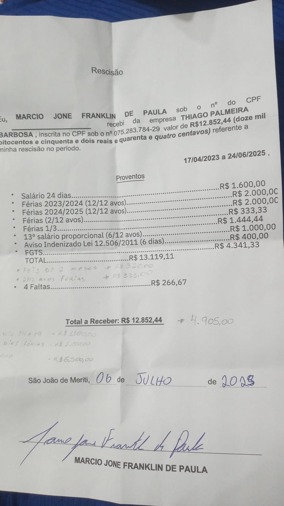

Dossiê de Defesa Trabalhista
Reclamante: Marcio Jone Franklin de Paula | Processo nº 0100545-34.2026.5.01.0222
Resumo do Caso & Metadados
Provas Absolutas na Defesa
Este portal reúne as provas digitais obtidas na conversa de WhatsApp com o reclamante que derrubam a maior parte dos pedidos da inicial. O principal ponto de defesa é um recibo de rescisão assinado pelo autor dando plena quitação de R$ 12.852,44 e a prova de que ele solicitou o não registro em carteira para receber encargos e pagar um carro.
| Reclamante | Marcio Jone Franklin de Paula (Padeiro) |
| Vara de Origem | Vara do Trabalho de Nova Iguaçu/RJ |
| Valor da Causa | R$ 214.980,87 |
| Período de Trabalho | 17/04/2023 a 24/06/2025 (2 anos, 2 meses e 7 dias) |
| Data de Ajuizamento | 30/04/2026 |
Principais Teses Contratadas
Quitação de Rescisão
O reclamante alega que foi dispensado sem receber nada. No entanto, em 06/07/2025 ele assinou o recibo de quitação de R$ 12.852,44, quitando as verbas devidas, aviso prévio, férias e FGTS. O valor restante foi pago via Pix imediato.
Não Assinatura da CTPS a Pedido do Reclamante
A carteira não foi assinada inicialmente porque o próprio reclamante solicitou em mensagem do dia 22/07/2024 receber os encargos previdenciários e trabalhistas em mãos a fim de integralizar o valor da parcela de R$ 700,00 de um carro comprado do tio dele.
Flexibilidade de Jornada e Ajudantes
O autor pleiteia horas extras alegando labor rÃgido. Provamos que ele trabalhava por tarefa diária, com horário flexÃvel de entrada (07:30/08:00) e saÃda antecipada antes das 14:00, lanches sem limites e escala em turno único com o colega Rafael (testemunha), além de fazer biscates.
CTPS & Pedido de Danos Morais
O Pedido do Reclamante (R$ 10.000,00)
Pleiteia danos morais sob a alegação de "clandestinidade do vínculo" e que a empresa agiu de má-fé ocultando o registro de trabalho na carteira profissional.
Fundamento da Defesa
Inexistência de dano moral ou má-fé. O próprio reclamante requereu por WhatsApp que o seu contrato de trabalho não fosse registrado. Ele desejava receber a quantia correspondente aos encargos trabalhistas em mãos (Pix/dinheiro) para pagar as parcelas de um Fox 2008 comprado de seu tio. A boa-fé objetiva impede que o reclamante se beneficie de um ato de informalidade que ele próprio pediu e se beneficiou.
Conversa de WhatsApp (22/07/2024)
Quitação de Verbas Rescisórias
O Pedido do Reclamante (R$ 186.939,89)
Alega que a empresa o dispensou de forma unilateral, sem pagar nenhuma verba rescisória ou indenização (avisos prévios, férias vencidas/proporcionais, FGTS + 40%, saldo de salário, multa do artigo 477 da CLT).
A Verdade dos Fatos (Quitação e Transação)
As partes celebraram um acordo extrajudicial em 06/07/2025 para quitar todas as verbas rescisórias calculadas no valor total de **R$ 12.852,44**. O reclamante deu plena e irrevogável quitação do saldo de salário, férias de 2 períodos + 1/3, 13º proporcional, aviso prévio indenizado de 6 dias e FGTS.
Como foi feito o pagamento:
Houve a dedução de R$ 5.000,00 que haviam sido adiantados pela empresa para ele adquirir o carro do tio, além de outros adiantamentos combinados. O saldo remanescente de **R$ 1.000,00** foi pago via Pix na mesma data da assinatura. O comprovante e a foto do documento foram enviados na conversa.
Termo de Rescisão Assinado (06/07/2025)

Comprovante do Pagamento Final (Pix)
CNPJ 31.269.546/0001-76
A Verdade sobre os Salários & Pagamentos Semanais
O Pedido e Alegação do Reclamante
Alega que recebia salário fixo de R$ 2.200,00 + R$ 150,00 "por fora" pagos pelo sócio (Thiago, pessoa física), tentando criar a falsa narrativa de "confusão patrimonial" para vincular a pessoa física à condenação solidária.
1. Salário Inicial de R$ 2.000,00 e Reajuste para R$ 2.200,00
O salário inicial pactuado foi de R$ 2.000,00. Contudo, atendendo ao pedido do trabalhador, os pagamentos eram feitos de forma **semanal no valor de R$ 500,00**. Posteriormente, o salário foi reajustado para R$ 2.200,00 (pago como **R$ 550,00 por semana**).
2. A Matemática dos Pagamentos Semanais (Surplus Financeiro)
O pagamento de forma semanal gerou um ganho extra considerável para o reclamante. Como o ano possui 52 semanas, ele recebeu 52 pagamentos no ano:
- Período Inicial (R$ 500/semana): 52 * R$ 500,00 = R$ 26.000,00 anuais (R$ 2.000,00 a mais do que receberia de forma mensal simples, equivalente a um 14º salário completo!).
- Período Final (R$ 550/semana): 52 * R$ 550,00 = R$ 28.600,00 anuais (R$ 2.200,00 a mais do que o mensal simples!).
E mesmo com esse surplus financeiro substancial em benefício do trabalhador, o reclamado ainda quitou regularmente o 13º salário anual, demonstrando total honestidade e boa-fé.
3. Pagamentos Efetuados Exclusivamente pela Pessoa Jurídica (Sem Confusão Patrimonial)
Ao contrário do que o autor afirma em juízo para tentar responsabilizar a pessoa física do sócio, todas as transferências semanais foram feitas pelo CNPJ da empresa. O remetente em cada um dos comprovantes bancários é BOGADOS PADARIA E CONFEITARIA (CNPJ 31.269.546/0001-76). Não existe confusão patrimonial, pois o sócio nunca pagou o salário com o seu CPF pessoal.
Histórico de Comprovantes Pix (Stone)
Abaixo estão listadas amostras das transferências semanais comprovando a consistência dos pagamentos e a titularidade exclusiva da Pessoa Jurídica (CNPJ 31.269.546/0001-76):
| Data | Valor | Origem (Remetente) |
|---|---|---|
| 24/06/2023 | R$ 500,00 | BOGADOS PADARIA (CNPJ) |
| 01/07/2023 | R$ 500,00 | BOGADOS PADARIA (CNPJ) |
| 08/07/2023 | R$ 500,00 | BOGADOS PADARIA (CNPJ) |
| 15/07/2023 | R$ 500,00 | BOGADOS PADARIA (CNPJ) |
| 12/08/2023 | R$ 500,00 | BOGADOS PADARIA (CNPJ) |
| 21/08/2023 | R$ 500,00 | BOGADOS PADARIA (CNPJ) |
| 02/09/2023 | R$ 500,00 | BOGADOS PADARIA (CNPJ) |
| 17/09/2023 | R$ 500,00 | BOGADOS PADARIA (CNPJ) |
| 15/10/2023 | R$ 500,00 | BOGADOS PADARIA (CNPJ) |
| 08/01/2024 | R$ 500,00 | BOGADOS PADARIA (CNPJ) |
| 19/03/2024 | R$ 500,00 | BOGADOS PADARIA (CNPJ) |
| 22/06/2024 | R$ 550,00 | BOGADOS PADARIA (CNPJ) |
| 29/06/2024 | R$ 550,00 | BOGADOS PADARIA (CNPJ) |
| 06/07/2024 | R$ 550,00 | BOGADOS PADARIA (CNPJ) |
| 05/10/2024 | R$ 550,00 | BOGADOS PADARIA (CNPJ) |
| 22/02/2025 | R$ 550,00 | BOGADOS PADARIA (CNPJ) |
* O arquivo ZIP completo contém todos os PDFs de comprovantes enviados no chat.
Jornada de Trabalho & Supressão de Almoço
O Pedido do Reclamante (R$ 40.329,42)
Alega que trabalhava ininterruptamente das 06:00 às 15:00 de segunda a sábado, sem gozar do intervalo intrajornada para descanso ou almoço, pleiteando horas extras em dobro e reflexos.
A Verdade dos Fatos (Flexibilidade de Horários)
A jornada do reclamante não era fixa e muito menos de sobrecarga. Em **06/02/2024**, ele mesmo solicitou flexibilização de horário para realizar serviços autônomos externos (pinturas/biscates) no início da manhã, ingressando às 09:00 e saindo às 14:00, ou seja, executando jornadas de apenas **5 horas diárias**.
Biscates e Trabalho em Equipe
O reclamante utilizava suas folgas para serviços externos particulares (como fazer teto de drywall em domingos de folga) e sua produção diária era dividida com outros profissionais que trabalhavam no setor de panificação (ajudantes como Moacir e padeiros como Rafael), refutando a versão exordial de isolamento e sobrecarga contínua.
Conversa de WhatsApp (06/02/2024)
5. Acúmulo de Função (Inexistência de Confeitaria e Salgados Residuais)
O Pedido do Reclamante (R$ 34.026,15)
Alega acúmulo ilegal de função, sustentando que realizava toda a fabricação de doces (confeiteiro) e salgados (salgadeiro) de forma sobrecarregada.
1. Inexistência de Confeitaria (Bolos de Pré-Mistura)
A padaria não comercializa bolos confeitados decorados ou com pasta americana. Os bolos produzidos eram simples de pré-mistura comercial (bater o pó pronto com ovos/leite e assar), o que é uma tarefa acessória e plenamente compatível com o cargo de Padeiro. A aquisição das misturas prontas pode ser comprovada pelas notas fiscais e histórico de compras do fornecedor.
2. Salgados Residuais (Aproveitamento de Sobras)
A confecção de salgados assados servia apenas para reaproveitar os pedaços finais de frios (presunto, queijo, mortadela) que não podiam mais ser fatiados. A produção diária de salgados (como cachorro-quente e hambúrguer básico) era de menos de 20 unidades, que frequentemente sobravam e iam para descarte por falta de movimento, gerando inclusive prejuízo.
3. Pequena Escala e Trabalho em Equipe
O estabelecimento processa apenas 4 sacos de farinha por dia (pequeno porte) e conta com 2 padeiros. O reclamante sempre trabalhou acompanhado de outro profissional (inicialmente o Sr. Moacir e, depois, o Sr. Rafael), não havendo labor solitário ou sobrecarga funcional.
Contatos e Limites de Produção
6. Adicional de Insalubridade (Calor e Frio)
O Pedido do Reclamante (R$ 20.525,44)
Pleiteia adicional de insalubridade em grau máximo sob a alegação de que trabalhava exposto ao calor excessivo dos fornos de pão e ao frio extremo por adentrar em "câmaras frias" industriais sem EPI.
A Verdade dos Fatos (Ausência de Risco por Frio)
O estabelecimento **não possui câmara fria frigorÃfica** ou de congelados. O único equipamento existente é uma **câmara de fermentação controlada** (armário climatizado mantido em temperatura ambiente ou com aquecimento/resfriamento brando unicamente para o crescimento da massa), cuja temperatura não gera choque térmico ou qualquer insalubridade por frio nos limites da NR-15.
Exposição ao Calor e Proteção com EPIs
Para o manuseio dos fornos de pão, assadeiras e bandejas de pães quentes, a padaria sempre disponibilizou e os funcionários usavam **luvas térmicas de proteção** de alta qualidade. Eventual exposição ao calor deve ser avaliada por perÃcia técnica de engenharia (IBUTG), restando impugnada a alegação de labor sem proteção.
Mensagens sobre Equipamentos
Central de Downloads & Ações Recomendadas
Material Pronto para Entrega
Baixe o pacote compactado completo contendo a minuta em Markdown, as imagens originais de provas e as orientações em alta resolução para anexar diretamente à sua defesa no processo trabalhista.
Pacote de Defesa Completo
Contém minuta, dossiê de provas e imagens renomeadas de recibos.
Baixar ZIPOrientações Processuais Importantes
1. Lavratura de Ata Notarial (CPC, art. 384)
Recomenda-se que a advogada compareça a um Cartório de Notas e lavre uma **Ata Notarial** registrando as mensagens e mídias das datas de **22/07/2024** (iniciativa do não registro pelo autor) e **06/07/2025** (acordo de quitação e Pix). A ata possui fé pública e afasta qualquer questionamento sobre manipulação de conversas.
2. Conciliação com Extrato Bancário
Deve-se juntar ao processo o extrato bancário oficial em PDF da conta de origem (Bogados Padaria) referente ao dia **06/07/2025**, para demonstrar que o débito de R$ 1.000,00 concilia-se perfeitamente com o ID da transação constante no comprovante do Pix enviado na conversa.
3. Pedido de Pena por Litigância de Má-Fé
Como o reclamante alega em juízo que não recebeu qualquer verba rescisória, omitindo o fato de ter assinado a quitação e recebido as compensações financeiras e o Pix, a defesa deve requerer a aplicação da pena por **Litigância de Má-Fé (CLT, art. 793-B)**, por alteração intencional da verdade dos fatos.